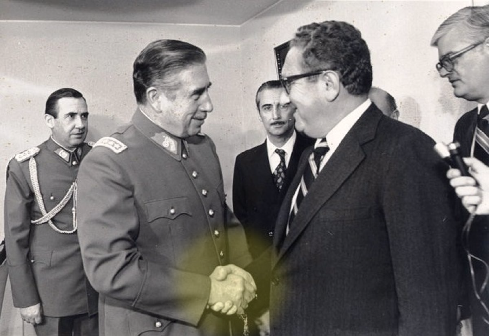

Se pone en relación con otros hechos históricos que estaban pasando en el mismo momento; como la Dictadura, el Plan Cóndor, y el Mundial del 78.
| Los siguientes hechos históricos se relacionan en que saturan todos los medios de comunicación y tapas de revista, impidiendo que se sepan otras noticias y tapar ciertos hechos como la Dictadura, o otras situaciones del país. | La fotografía de prensa son las portadas de los diarios y son una herramienta eficaz como plan comunicacional. Las imágenes adoptan todas la misma estrategia, ya que son completamente manipuladas y tienen el fin de mostrar dicotómicamente la realidad. |
El Proceso de Reorganización Nacional desde el golpe de Estado del 24 de marzo de 1976 hasta la entrega del poder a un gobierno constitucional el 10 de diciembre de 1983.
El Plan Cóndor fue implementado oficial y formalmente en noviembre en 1975 por las cúpulas de los regímenes dictatoriales del Cono Sur.
La Copa Mundial de la FIFA Argentina 1978 se desarrolló en Argentina entre el 1 de junio y el 25 de junio de 1978.